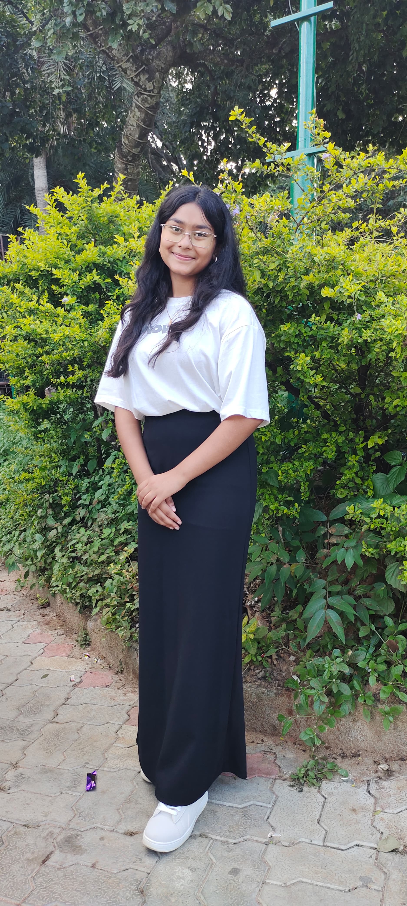

A personal collection of ideas, work & questions
ShreelekhaBatabyal
Ideas in progress.
Exploring ideas, people and possibilities through writing, research and community work.
Curiosity is a
way of paying attention.

A little about this space
This is an evolving record of what I’m learning, making, reading and contributing to — not a finished story, but one in progress.
A little more about me01 / SELECTED WORK
Things I’ve made, learned & explored.
Projects, community initiatives and questions that have shaped how I think and what I do.
Showing up
with purpose.
Community initiatives, shared efforts and the lessons that come from listening and contributing.
Explore community work
Ideas, tested
and explored.
Research, experiments and projects shaped by curiosity, iteration and a willingness to rethink.
Explore projects02 / THE WRITING DESK
Thoughts worth following.
Articles, blog posts, book reviews and reflections on ideas that catch my attention.
03 / BEHIND THE WORK
Still becoming.
Always curious.
I’m Shreelekha — a student interested in ideas, creativity, research and the ways people shape the world around them.
This site grows alongside me: a place to share the work I do, the questions I ask and the perspectives I’m still developing.
Get in touch